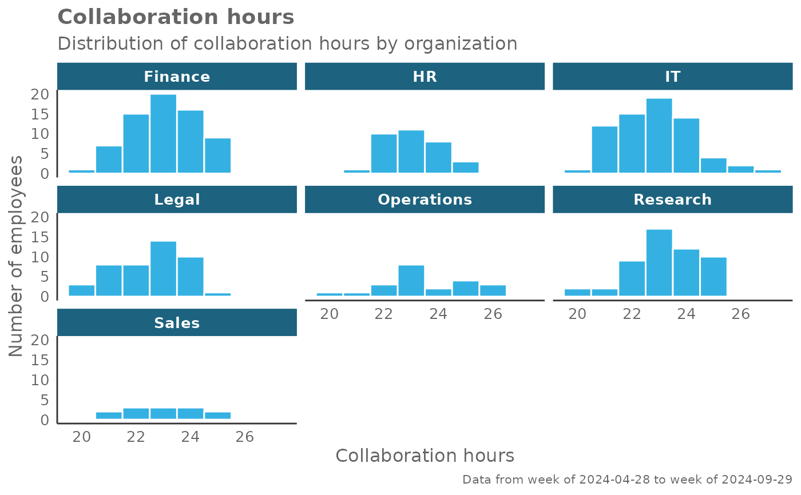
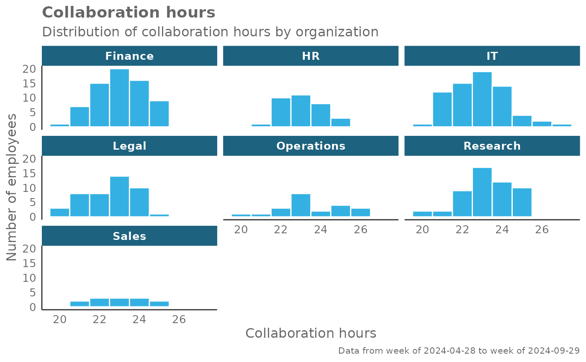

Provides an analysis of the distribution of a selected metric. Returns a faceted histogram by default. Additional options available to return the underlying frequency table.
Usage
create_hist(
data,
metric,
hrvar = "Organization",
mingroup = 5,
binwidth = 1,
ncol = NULL,
return = "plot"
)Arguments
- data
A Standard Person Query dataset in the form of a data frame.
- metric
String containing the name of the metric, e.g. "Collaboration_hours"
- hrvar
String containing the name of the HR Variable by which to split metrics. Defaults to
"Organization". To run the analysis on the total instead of splitting by an HR attribute, supplyNULL(without quotes).- mingroup
Numeric value setting the privacy threshold / minimum group size. Defaults to 5.
- binwidth
Numeric value for setting
binwidthargument withinggplot2::geom_histogram(). Defaults to 1.- ncol
Numeric value setting the number of columns on the plot. Defaults to
NULL(automatic).- return
String specifying what to return. This must be one of the following strings:
"plot""table""data""frequency"
See
Valuefor more information.
Value
A different output is returned depending on the value passed to the return
argument:
"plot": 'ggplot' object. A faceted histogram for the metric."table": data frame. A summary table for the metric, containing the following columns:group: The HR variable by which the metric is split.mean: The mean of the metric.min: The minimum value of the metric.p10: The 10th percentile of the metric.p25: The 25th percentile of the metric.p50: The 50th percentile of the metric.p75: The 75th percentile of the metric.p90: The 90th percentile of the metric.max: The maximum value of the metric.sd: The standard deviation of the metric.range: The range of the metric.n: The number of observations.
"data": data frame. Data with calculated person averages."frequency: list of data frames. Each data frame contains the frequencies used in each panel of the plotted histogram.
See also
Other Flexible:
create_bar(),
create_bar_asis(),
create_boxplot(),
create_bubble(),
create_density(),
create_dist(),
create_fizz(),
create_inc(),
create_line(),
create_line_asis(),
create_period_scatter(),
create_rank(),
create_sankey(),
create_scatter(),
create_stacked(),
create_tracking(),
create_trend()
Examples
# Return plot for whole organization
create_hist(pq_data, metric = "Collaboration_hours", hrvar = NULL)
# Return plot
create_hist(pq_data, metric = "Collaboration_hours", hrvar = "Organization")
 # Return plot but coerce plot to 3 columns
create_hist(pq_data, metric = "Collaboration_hours", hrvar = "Organization", ncol = 3)

# Return summary table
create_hist(pq_data, metric = "Collaboration_hours", hrvar = "Organization", return = "table")
#> # A tibble: 7 × 12
#> group mean min p10 p25 p50 p75 p90 max sd range n
#> <chr> <dbl> <dbl> <dbl> <dbl> <dbl> <dbl> <dbl> <dbl> <dbl> <dbl> <int>
#> 1 Finance 23.1 20.3 21.3 22.3 23.1 23.9 25.0 25.4 1.24 5.10 68
#> 2 HR 23.1 21.0 22.0 22.4 22.9 24.0 24.4 24.8 1.01 3.78 33
#> 3 IT 22.8 20.3 21.0 21.7 22.8 23.8 24.5 26.9 1.43 6.65 68
#> 4 Legal 22.5 19.7 21.0 21.5 22.6 23.5 24.2 24.8 1.23 5.06 44
#> 5 Operations 23.5 20.0 21.7 22.6 23.3 24.9 25.5 26.4 1.62 6.39 22
#> 6 Research 23.3 20.1 21.8 22.5 23.3 24.2 25.0 25.5 1.30 5.39 52
#> 7 Sales 23.1 21.2 21.6 22.2 23.2 23.9 24.5 24.7 1.13 3.48 13
# Return plot but coerce plot to 3 columns
create_hist(pq_data, metric = "Collaboration_hours", hrvar = "Organization", ncol = 3)

# Return summary table
create_hist(pq_data, metric = "Collaboration_hours", hrvar = "Organization", return = "table")
#> # A tibble: 7 × 12
#> group mean min p10 p25 p50 p75 p90 max sd range n
#> <chr> <dbl> <dbl> <dbl> <dbl> <dbl> <dbl> <dbl> <dbl> <dbl> <dbl> <int>
#> 1 Finance 23.1 20.3 21.3 22.3 23.1 23.9 25.0 25.4 1.24 5.10 68
#> 2 HR 23.1 21.0 22.0 22.4 22.9 24.0 24.4 24.8 1.01 3.78 33
#> 3 IT 22.8 20.3 21.0 21.7 22.8 23.8 24.5 26.9 1.43 6.65 68
#> 4 Legal 22.5 19.7 21.0 21.5 22.6 23.5 24.2 24.8 1.23 5.06 44
#> 5 Operations 23.5 20.0 21.7 22.6 23.3 24.9 25.5 26.4 1.62 6.39 22
#> 6 Research 23.3 20.1 21.8 22.5 23.3 24.2 25.0 25.5 1.30 5.39 52
#> 7 Sales 23.1 21.2 21.6 22.2 23.2 23.9 24.5 24.7 1.13 3.48 13